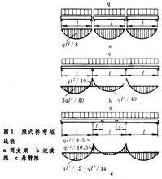
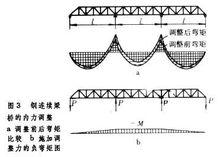
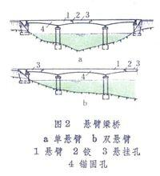
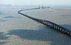

梁式桥 用梁或桁架梁作主要承重结构的桥梁。其上部结构在铅垂向荷载作用下，支点只产生竖向反力。梁式桥为桥梁的基本体系之一。制造和架设均甚方便，使用广泛，在桥梁建筑中占有很大比例。 1简介 梁式桥： (liang shi qiao) beam bridge, girder bridge 以受弯为主的主梁作为主要承重构件的桥梁。主梁可以是实腹梁或者是桁架梁（空腹梁）。实腹梁外形简单，制作、安装、维修都较方便，因此广泛用于中、 小跨径桥梁。但实腹梁在材料利用上不够经济。桁架梁中组成桁架的各杆件基本只承受轴向力，可以较好地利用杆件材料强度，但桁架梁的构造复杂、制造费工，多用于较大跨径桥梁。桁架梁一般用钢材制作，也可用预应力混凝土或钢筋混凝土制作，但用的较少。过去也曾用木材制作桁架梁，因耐久性差，现很少使用。实腹梁主要用钢筋混凝土、预应力混凝土制作，也可以用钢材做成钢钣梁或钢箱梁。实腹梁桥的最早形式是用原木做成的木梁桥和用石材做成的石板桥。由于天然材料本身的尺寸、性能、资源等原因，木桥现在已基本上不采用， 石板桥也只用作小跨人行桥。 2分类 按截面 根据实腹梁的截面形式可分为板梁、□形梁、T形梁或箱形梁等。 梁式桥  按静力 梁桥又可分为简支梁桥、连续梁桥和悬臂梁桥。 ①简支梁桥：主梁简支在墩台上,各孔独立工作,不受墩台变位影响。实腹式主梁构造简单，设计简便，施工时可用自行式架桥机或联合架桥机将一片主梁一次架设成功。但简支梁桥各孔不相连续，车辆在通过断缝时将产生跳跃，影响车速的提高。因此，目前趋向于把主梁做成为简支，而把桥面做成连续的形式。简支梁桥随着跨径增大，主梁内力将急剧增大，用料便相应增多，因而大跨径桥一般不用简支梁。 ②连续梁桥：主梁是连续支承在几个桥墩上。在荷载作用时，主梁的不同截面上有的有正弯矩，有的有负弯矩，而弯矩的绝对值均较同跨径桥的简支梁小。这样，可节省主梁材料用量。连续梁桥通常是将3～5孔做成一联，在一联内没有桥面接缝，行车较为顺适。连续梁桥施工时，可以先将主梁逐孔架设成简支梁然后互相连接成为连续梁。或者从墩台上逐段悬伸加长最后连接成为连续梁。近一、二十年，在架设预应力混凝土连续梁时，成功地采用了顶推法施工，即在桥梁一端（或两端）路堤上逐段连续制作梁体逐段顶向桥孔，使施工较为方便。连续梁桥主梁内有正弯矩和负弯矩，构造比较复杂。此外，连续梁桥的主梁是超静定结构，墩台的不均匀沉降会引起梁体各孔内力发生变化。因此，连续梁一般用于 地基条件较好、跨径较大的桥梁上。1966年建成的美国亚斯托利亚桥，是目前跨径最大的钢桁架连续梁桥，它的跨径为376米。 ③悬臂梁桥：又称伸臂梁桥。是将简支梁向一端或两端悬伸出短臂的桥梁。这种桥式有单悬臂梁桥或双悬臂梁桥。悬臂梁桥往往在短臂上搁置简支的挂梁，相互衔接构成多跨悬臂梁。有短臂和挂梁的桥孔称为悬臂孔或挂孔，支持短臂的桥孔称为锚固孔。悬臂梁桥的每个挂孔两端为桥面接缝，悬臂端的挠度也较大，行车条件并不比简支梁桥有所改善。悬臂梁一片主梁的长度较同跨简支梁为长，施工安装上相应要困难些。目前对预应力混凝土悬臂梁桥多采用悬臂拼装或悬臂浇筑的方法施工。为适应悬臂施工法的发展，保证主梁的内力状态和施工时一样，出现一种没有锚固孔，并把悬伸的短臂和墩身直接固结在立面上，形成预应力混凝土 T形刚架桥，这种桥在20世纪50年代后发展起来。 按材料 有木梁桥、石梁桥、钢梁桥、钢筋混凝土梁桥、预应力混凝土梁桥以及用钢筋混凝土桥面板和钢梁构成的结合梁桥等。木梁桥和石梁桥只用于小桥；钢筋混凝土梁桥用于中、小桥；钢梁桥和预应力混凝土梁桥可用于大、中桥。 按结构 有实腹梁桥和桁架梁桥两大类。实腹梁桥的截面积主要由弯矩决定，而弯矩大致与跨度的平方成正比（均布荷载条件下），当跨度大时，梁的腹板上的平均法向应力颇小，不能使材料充分利用，所以跨度不宜做得太大；桁架梁桥的杆件承受轴向力，材料能充分利用，自重较轻，跨越能力大，多用于建造大跨度桥。但实腹梁桥构造简单，制造与架设均较方便。由于这两种梁式桥的受力性质不同，实腹梁桥以用于预应力混凝土桥为主，而桁架梁桥则多用于钢桥。 3高跨比 主梁弯矩最大处的梁高h对计算跨度l的比值 (h/l)称高跨比，是梁式桥设计的一项重要技术经济指标，对安全、经济和适用有重大影响。为了构造简单，施工方便，梁式桥的主梁（桁）常做成等高度的。但在大跨度桥梁中，从经济考虑，梁高常随设计内力而变化，因此在上承式桥中，可将下缘做成曲线型，下承式桥则将上缘做成曲线型。对于预应力混凝土连续梁桥，为了合理布置钢丝束，常须加大支点刚度（梁高）而调低跨中正弯矩。  梁式桥 为了获得最佳的弯矩分布，在连续梁桥和悬臂梁桥中，常须做分跨比较，一般边跨要比中跨小一些，但分跨规划中又往往要受到地质、地形以及通航（车）要求等条件制约，必须综合考虑决定。桥梁分跨确定后，梁高h取决于强度、刚度和使用条件。按强度要求,荷载产生的弯矩，要靠梁的内力矩来平衡，梁高必须满足这一条件。如加大梁高,内力矩臂亦随之增大,可使翼缘（弦杆）面积减小，但要增加腹板（腹杆）用料；如减小梁高，则反之。当满足材料总用量为最少的要求下，可求得一“经济高度”。但在钢筋混凝土或预应力混凝土桥中，增大梁高可使钢筋（丝）用量减少，而混凝土用量增加，须作具体分析。按刚度要求，须在不计冲击力的活载（称静活载）作用下最大竖向挠度不得超过规范规定的容许值，以保证行车安全平顺，由此可求得“最小高度”；近代趋向采用高强材料,其容许应力提高后,梁高往往由这一条件所控制。梁的刚度与活载q对恒载p的比值（q/p）有关,比值愈大，梁的高跨比也要求大一些，一般说来，小桥、钢桥与铁路桥的高跨比要做得大一些。梁式桥的恒载挠度因可通过设置上拱度来抵消，不作为控制刚度的因素。上拱度是按恒载加二分之一静活载算得的挠度曲线反向设置，和桥面（轨顶）在活载作用下形成的挠度曲线恰呈反对称，这样可使上部结构的端部角变化为最小。梁的高跨比还受到使用条件的限制，例如桥下有通航（车）要求时，则须满足桥下净空的要求。设计时应综合考虑。 4内力调整  梁式桥 连续梁桥的内力调整实质上是对恒载产生的内力进行调整，使得跨中与支点控制截面处的设计内力接近相等，从而能使构造简单，制造方便，节省材料。例如：一联三等跨钢连续梁桥的设计弯矩图（恒载加活载），其中间支点负弯矩的绝对值小于边跨的跨中正弯矩值，为使这两个控制截面的弯矩接近相等，就先对恒载的弯矩进行调整，使得跨中的正弯矩减小，支点的负弯矩绝对值加大。理论上的做法是在连续梁两端支点处各施一个向下的力P,两中间支点处各施一个向上的力P,使得沿梁各截面产生一个负弯矩,亦即相当于在三跨连续梁安装就位后,要将两端支点下降一个距离，而中间两个支点的高程维持不变，这要影响桥面的纵坡而且施工麻烦。工程实践中则是当三孔梁在工厂中制造时，即将端支点的计算下降量考虑在预设的上拱度中,使得钢梁在恒载未作用前,两个端支点就高于中间支点。当钢梁安装就位后,4个支点落到同一水平高程时，连续梁的内力调整也就随之实现。  跨海大桥 5标准跨径 梁式桥或板式桥标准跨径是指两相邻桥墩中线之间的距离，或桥墩中心线至桥台台背前缘之间的距离 6区别 刚架桥： (gang jia qiao) rigid frame bridge 上部结构和下部结构连成整体的框架结构。根据基础连结条件不同，分为有铰与无铰两种。这种结构是超静定体系，在垂直荷载作用下，框架底部除了产生竖向反力外，还产生力矩和水平反力。常见的刚架桥有门式刚架桥和斜腿刚架桥等。 梁式桥的特点是其桥跨的承载结构由梁组成。在竖向荷载作用下梁的支承处仅产生竖向反力而无水平反力（推力）。梁的内力以弯矩和剪力为主。 梁式桥可分为简支梁桥，连续梁桥和悬臂梁桥。简支梁桥的跨越能力有限（一般在50M以下），当计算跨径小于25M时，通常采用混凝土材料，而计算跨径大于25M时，更多采用预应力混凝土材料。